David Salgado Menendes — RA 3024104037
Demais integrantes: ____________________________________
Trabalho de conclusão aprovado como requisito parcial para a obtenção do grau de Bacharel, do curso de Ciência da Computação, da Universidade Nove de Julho, pelo(a) professor(a) orientador(a) abaixo mencionado(a).
São Paulo, ____ de ______________ de 2026
Dedicamos este trabalho a todas as pessoas que, anonimamente, param o carro na estrada, abrem o portão de casa ou dividem a própria ração com um animal que ninguém mais viu. E a cada bicho que esperou, com paciência, alguém que voltasse para buscá-lo.
A realização deste trabalho só foi possível graças ao apoio e à colaboração de diversas pessoas, às quais expressamos nossa gratidão.
Aos nossos familiares, pelo apoio e pela paciência durante as noites e fins de semana dedicados ao projeto.
Aos professores do curso de Ciência da Computação da Universidade Nove de Julho, pelos ensinamentos que sustentaram cada decisão técnica aqui descrita, e ao(à) orientador(a) deste trabalho, pela orientação ao longo do semestre.
Aos voluntários de proteção animal com quem conversamos informalmente ao longo do semestre. Seus relatos sobre cadernos de vacinação perdidos, mensagens de adoção esquecidas no celular e prestações de contas feitas à mão inspiraram a história fictícia da Associação Focinho Amigo e, sobretudo, os requisitos do sistema.
À comunidade de software livre, cujo trabalho — Node.js, React, PostgreSQL, Docker, Proxmox e tantas outras ferramentas — permite que uma solução profissional seja construída e mantida com custo de licença zero, condição essencial para o terceiro setor.
A todos, o nosso muito obrigado.
O presente trabalho descreve a especificação, o desenvolvimento e a preparação para implantação do Resgate Animal, uma plataforma web para organizações não governamentais (ONGs) de resgate e proteção animal. O sistema reúne, em uma única aplicação, o site público da ONG — com vitrine de animais para adoção, candidatura on-line e canal de contato, voluntariado, doação e denúncia — e uma área administrativa para cadastro de animais com fotos, triagem das candidaturas e gestão das mensagens recebidas. Para contextualizar o problema, foi construído um estudo de caso fictício, a Associação Focinho Amigo, cuja operação dependia de cadernos, planilhas e mensagens de WhatsApp. A aplicação foi desenvolvida integralmente em JavaScript: API REST em Node.js 24 com Express 5, validação por esquemas zod, autenticação JWT, senhas com bcrypt e acesso a dados com o query builder Knex; interface em React 19 com Vite; e banco de dados PostgreSQL 18 com migrations versionadas. A infraestrutura foi projetada para um servidor Proxmox VE, com a aplicação empacotada em três containers Docker (Nginx, API e banco) dentro de um container LXC, rotina de backup diário e documentação de implantação. O sistema foi validado em ambiente local por 31 casos de teste automatizados de ponta a ponta na API, todos aprovados, além de verificação manual das telas. O trabalho também entrega a especificação completa do produto — 39 requisitos funcionais, 13 não funcionais e 10 regras de negócio — e cinco diagramas de modelagem, servindo de base para as próximas etapas: prontuário veterinário, controle financeiro e voluntariado.
Palavras-chave: ONG; Proteção animal; Adoção; Node.js; React; PostgreSQL; Docker; Proxmox; Sistemas Web.
This paper describes the specification, development and deployment preparation of Resgate Animal, a web platform for animal rescue non-governmental organizations (NGOs). The system combines the NGO's public website — an adoption showcase, online adoption applications and a contact channel for volunteering, donations and abuse reports — with an administrative area for registering animals with photos, screening applications and managing incoming messages. To frame the problem, a fictional case study was created: the Focinho Amigo Association, whose operation relied on notebooks, spreadsheets and WhatsApp messages. The application was built entirely in JavaScript: a REST API on Node.js 24 with Express 5, zod schema validation, JWT authentication, bcrypt password hashing and the Knex query builder; a React 19 interface built with Vite; and a PostgreSQL 18 database with versioned migrations. The infrastructure was designed for a Proxmox VE server, packaging the application as three Docker containers (Nginx, API and database) inside an LXC container, with daily backups and deployment documentation. The system was validated locally by 31 automated end-to-end API test cases, all passing, plus manual screen verification. The work also delivers the full product specification — 39 functional requirements, 13 non-functional requirements and 10 business rules — and five modeling diagrams, laying the groundwork for the next stages: veterinary records, financial control and volunteer management.
Keywords: NGO; Animal welfare; Adoption; Node.js; React; PostgreSQL; Docker; Proxmox; Web Systems.
O Brasil tem uma das maiores populações de animais de estimação do mundo e, ao mesmo tempo, um contingente expressivo de cães e gatos em situação de abandono. Entre o animal na rua e a família que o adota existe, quase sempre, uma organização da sociedade civil — muitas vezes pequena, mantida por voluntários e por doações de pessoas físicas — que resgata, trata, castra, vacina e procura um novo lar para cada um deles.
Essas organizações lidam diariamente com um volume grande de informações: o histórico de saúde de dezenas de animais, candidaturas de adoção que chegam por vários canais, denúncias de maus-tratos, ofertas de doação e de voluntariado, e a prestação de contas aos doadores. Na maior parte dos casos, esse controle é feito em cadernos, planilhas e conversas de aplicativos de mensagem, o que leva à perda de informação justamente nos momentos em que ela é mais necessária.
O presente trabalho documenta o desenvolvimento do Resgate Animal, um sistema web criado para resolver esse problema. Ele une, em uma única aplicação, o site público da ONG e uma área administrativa de gestão. Para guiar as decisões de projeto, foi construído um estudo de caso fictício, a Associação Focinho Amigo, apresentado no Capítulo 2.
O projeto foi desenvolvido integralmente em JavaScript — Node.js no servidor e React no navegador — com PostgreSQL como banco de dados relacional, e foi preparado para ser hospedado em um servidor de virtualização Proxmox VE, com os serviços executando em containers Docker dentro de um container LXC.
Este relatório apresenta o estudo de caso, a fundamentação teórica das escolhas tecnológicas, a metodologia, a especificação de requisitos, a modelagem do banco de dados, a arquitetura, a infraestrutura de implantação, as telas do sistema, os aspectos de segurança, os testes realizados e os resultados obtidos.
Durante o levantamento para o estudo de caso, ficou claro que o maior obstáculo dessas ONGs não é a falta de vontade, mas a falta de ferramenta. Sistemas de gestão comerciais são caros e pensados para clínicas veterinárias ou pet shops; planilhas genéricas não impõem regra alguma. O resultado são situações como duas famílias convidadas a adotar o mesmo animal, vacinas que vencem sem que ninguém perceba e doadores que deixam de contribuir por não receber notícias de onde foi parar o dinheiro.
A criação do Resgate Animal surgiu da necessidade de oferecer a essas organizações uma solução de código aberto, de baixo custo operacional, que possa ser hospedada em infraestrutura própria ou cedida por parceiros, e que cresça junto com a ONG: começando pelo que dá visibilidade e traz adoções — o site e a vitrine — e evoluindo para prontuário, finanças e voluntariado.
Especificar, desenvolver e preparar para implantação um sistema web que divulgue os animais disponíveis para adoção e digitalize o ciclo de vida do animal dentro de uma ONG de resgate, do resgate ao acompanhamento pós-adoção.
A Associação Focinho Amigo nasceu em uma noite chuvosa de março de 2017, quando a veterinária aposentada Marta Albuquerque encontrou uma cadela atropelada no acostamento da Rodovia Mogi-Bertioga, em Mogi das Cruzes (SP). A cadela, batizada de Estrela, sobreviveu depois de duas cirurgias pagas com uma "vaquinha" entre vizinhos. Em poucas semanas, a garagem de Marta abrigava outros seis animais, e a vaquinha virou uma associação formalizada no fim daquele ano.
Em 2019, com o apoio de um empresário local, a ONG passou a ocupar uma chácara cedida no bairro de Jundiapeba, onde funciona até hoje. A pandemia de 2020–2021 aumentou o número de abandonos e, também, o de pessoas dispostas a ajudar: a página da ONG no Instagram passou de mil para dez mil seguidores, e o volume de mensagens se tornou impossível de acompanhar pelo celular de uma só pessoa.
Atualmente a associação abriga em média 60 animais, entre cães e gatos. A equipe é formada por dois funcionários contratados (tratadora e auxiliar de limpeza), a veterinária parceira Dra. Camila Torres, que atende duas vezes por semana, e cerca de 30 voluntários coordenados por Rafael Nunes. A receita vem de doações de pessoas físicas, de 42 padrinhos mensais e de um bazar beneficente realizado a cada dois meses.
| Item | Situação |
|---|---|
| Fundação | Dezembro de 2017, Mogi das Cruzes (SP) |
| Sede | Chácara cedida em Jundiapeba, capacidade para 70 animais |
| Equipe | 2 funcionários, 1 veterinária parceira, ~30 voluntários |
| Adoções acumuladas | 612 animais desde a fundação |
| Fontes de receita | Doações de pessoa física, 42 padrinhos, bazar bimestral |
| Controle antes do sistema | Caderno de vacinação, planilha compartilhada, WhatsApp, Instagram e e-mail |
A Figura 2 mostra as adoções realizadas em 2026. O crescimento a partir de julho coincide com as feiras de adoção mensais em um shopping da cidade, que trazem visibilidade, mas também multiplicam as mensagens que precisam ser respondidas.
Em uma entrevista simulada com a coordenação, quatro situações se repetiram nos relatos e foram tratadas como as principais dores do projeto:
A Figura 3 resume a origem dos pedidos de adoção recebidos no primeiro semestre de 2026, antes do sistema. A dispersão em quatro canais explica boa parte dos problemas relatados.
Cada dor foi traduzida em uma capacidade do sistema. A Tabela 2 mostra essa correspondência e indica quais respostas já estão implementadas nesta entrega e quais fazem parte das próximas fases.
| Dor | Resposta do sistema | Situação |
|---|---|---|
| Pedidos de adoção espalhados em quatro canais | Candidatura on-line na página de cada animal, centralizada em uma fila única no painel administrativo | Implementado |
| Mesmo animal prometido a duas famílias | Status do animal visível para toda a equipe; regra RN05 (apenas uma candidatura aprovada por animal) | Parcial |
| Denúncias e ofertas de ajuda perdidas | Formulário de contato com tipo (denúncia, voluntariado, doação) e caixa de mensagens com controle de leitura | Implementado |
| Vacinas vencidas sem alerta | Prontuário veterinário com cálculo de reforço e painel de pendências (RF13–RF15) | Planejado |
| Falta de prestação de contas | Registro de doações e despesas, custo por animal e relatório mensal de transparência (RF27–RF32) | Planejado |
Este capítulo apresenta os conceitos e as tecnologias que fundamentam o desenvolvimento e a implantação do Resgate Animal, das ferramentas de desenvolvimento aos componentes de infraestrutura.
ONGs de proteção animal executam um ciclo bem definido: resgate, triagem clínica, tratamento, castração e vacinação, disponibilização para adoção, avaliação do adotante, entrega com termo de responsabilidade e acompanhamento pós-adoção. A adoção responsável depende de que esse ciclo seja registrado: o adotante precisa receber o histórico de saúde do animal, e a ONG precisa saber, meses depois, se o animal continua bem. Por serem mantidas por doações, essas organizações também precisam demonstrar transparência no uso dos recursos — o que exige registro sistemático de entradas e saídas.
O Resgate Animal modela esse ciclo como uma máquina de estados (Seção 6.3), garantindo que um animal só avance de etapa quando as condições forem atendidas.
JavaScript é a linguagem nativa dos navegadores e, desde o surgimento do Node.js em 2009, também uma linguagem de servidor amplamente utilizada. O Node.js executa JavaScript fora do navegador sobre o motor V8 e adota um modelo de entrada e saída não bloqueante, orientado a eventos, adequado a aplicações web que passam a maior parte do tempo esperando respostas de banco de dados e de rede.
Utilizar JavaScript nas duas pontas — servidor e interface — foi um requisito do projeto. Na prática, isso reduz a troca de contexto da equipe, permite compartilhar convenções e ferramentas (como o gerenciador de pacotes npm) e facilita que voluntários com conhecimento de desenvolvimento web contribuam com a manutenção. O projeto usa a versão 24 do Node.js e o padrão ES Modules (import/export).
O Express é o framework web mais difundido do ecossistema Node.js. Sua arquitetura é baseada em uma cadeia de middlewares: funções que recebem a requisição, podem modificá-la ou respondê-la, e repassam o controle para a próxima. Autenticação, limite de requisições, cabeçalhos de segurança e tratamento de erros são implementados como middlewares independentes, aplicados apenas às rotas que precisam deles. A versão 5, utilizada no projeto, trata nativamente exceções lançadas em funções assíncronas, encaminhando-as ao tratador de erros central.
O React é uma biblioteca para construção de interfaces baseada em componentes: cada parte da tela (cartão de animal, formulário, tabela) é uma função que recebe dados e devolve a interface correspondente. O site do Resgate Animal é uma Single Page Application (SPA): o navegador carrega a aplicação uma vez e, a partir daí, troca de página sem recarregar, buscando apenas dados em JSON na API. A navegação entre páginas usa o React Router.
O Vite é a ferramenta de desenvolvimento e empacotamento. Em desenvolvimento, oferece recarga instantânea e repassa as chamadas /api para a API local; em produção, gera arquivos estáticos otimizados (cerca de 88 kB compactados), servidos pelo Nginx.
O PostgreSQL é um sistema gerenciador de banco de dados objeto-relacional de código aberto, com origem no projeto POSTGRES da Universidade da Califórnia em Berkeley. Implementa integralmente as propriedades ACID (atomicidade, consistência, isolamento e durabilidade), controle de concorrência multiversão (MVCC), restrições de integridade, chaves estrangeiras com ações em cascata e tipos avançados como jsonb e vetores. No Resgate Animal, as restrições do próprio banco — NOT NULL, CHECK para os valores enumerados e chaves estrangeiras com ON DELETE CASCADE ou SET NULL — formam uma segunda camada de proteção, além da validação feita pela API.
O Knex é um query builder: uma biblioteca que monta comandos SQL a partir de chamadas JavaScript, tratando a parametrização (e, portanto, prevenindo injeção de SQL) sem esconder o modelo relacional, como fazem os ORMs. Também oferece migrations: arquivos versionados que descrevem cada alteração do esquema, com funções up (aplicar) e down (desfazer). No projeto, as migrations são aplicadas automaticamente quando a API inicia, de modo que uma atualização do sistema nunca deixa o banco em versão incompatível com o código.
Docker é uma plataforma de containers: cada serviço é empacotado com suas dependências em uma imagem imutável e executado de forma isolada. O Docker Compose descreve, em um único arquivo, o conjunto de serviços da aplicação, suas redes, variáveis de ambiente e volumes persistentes, permitindo subir o sistema inteiro com um comando. Para uma ONG, isso significa que atualizar ou reinstalar o sistema não depende de conhecimento detalhado de cada componente.
O Proxmox Virtual Environment é uma plataforma de virtualização de código aberto baseada em Debian, que gerencia máquinas virtuais (KVM) e containers de sistema (LXC) por uma interface web. Containers LXC compartilham o kernel do host e, por isso, consomem muito menos memória que máquinas virtuais. Com as opções nesting e keyctl habilitadas, um container LXC sem privilégios pode executar o Docker internamente — arranjo que combina a leveza do LXC, os backups por snapshot do Proxmox e a portabilidade do Docker Compose.
O JSON Web Token (JWT, RFC 7519) é um formato de token assinado que carrega a identidade do usuário. Após o login, a API devolve um token com validade de oito horas, enviado pelo navegador no cabeçalho Authorization das requisições seguintes; como a assinatura é verificada a cada chamada, o servidor não precisa manter sessões em memória (modelo stateless). As senhas nunca são armazenadas em texto: o bcrypt gera um hash com salt aleatório e fator de custo configurável (12, no projeto), tornando ataques de força bruta computacionalmente caros, conforme recomendado pela OWASP.
As tecnologias foram escolhidas a partir de quatro critérios: (i) restrição do projeto a JavaScript e PostgreSQL; (ii) custo de licença zero; (iii) maturidade e tamanho da comunidade, que facilitam a manutenção por voluntários; e (iv) aderência à infraestrutura disponível (Proxmox). A Tabela 3 resume as alternativas consideradas.
| Escolhida | Alternativas | Motivo da escolha |
|---|---|---|
| Express 5 | Fastify, NestJS | Mais simples e mais documentado; NestJS acrescenta estrutura demais para o porte do projeto |
| React + Vite | Vue, Angular, Next.js | Maior ecossistema; SPA estática servida por Nginx, sem servidor de renderização |
| Knex | Prisma, Sequelize, SQL puro | SQL explícito com parametrização e migrations em JavaScript, sem etapa de geração de código |
| zod | Joi, validação manual | Esquemas declarativos que validam e normalizam os dados (ex.: e-mail em minúsculas) |
| JWT | Sessão em cookie com armazenamento no servidor | API stateless, sem tabela de sessões; adequada a futuras integrações (app móvel) |
| bcrypt | Argon2, SHA-256 | Hash adaptativo resistente a força bruta, implementação pura em JavaScript (bcryptjs) |
| Docker em LXC | VM dedicada, instalação direta no LXC | Menor consumo de memória que uma VM; implantação reproduzível com um comando |
O desenvolvimento seguiu uma abordagem iterativa e incremental, organizada em sprints com entregas verificáveis. A primeira iteração priorizou o que gera valor imediato para a ONG — visibilidade e adoções — e a infraestrutura necessária para colocar o sistema no ar; as funcionalidades de gestão interna foram especificadas em detalhe e planejadas para as iterações seguintes.
| Fase | Atividades | Resultado |
|---|---|---|
| 0 – Levantamento | Construção do estudo de caso, entrevista simulada, definição da stack (JavaScript + PostgreSQL + Proxmox) | Problemas e restrições documentados |
| 1 – Fundação | Estrutura do repositório, API REST, modelo de dados inicial, site público, painel administrativo, upload de fotos | Aplicação funcional em ambiente local |
| 2 – Infraestrutura | Dockerfiles, Docker Compose, configuração do Nginx, script de backup, roteiro de implantação em LXC | Implantação reproduzível com um comando |
| 3 – Testes | 31 casos de teste de ponta a ponta na API, verificação manual das telas no navegador, correção de defeitos | Sistema validado localmente |
| 4 – Especificação | Requisitos funcionais e não funcionais, regras de negócio, modelo de domínio completo, cronograma | Especificação no README |
| 5 – Documentação | Diagramas em draw.io, capturas de tela, este relatório | Relatório final |
O código está organizado em duas aplicações independentes dentro do mesmo repositório: api/ (servidor) e web/ (interface), além de docs/ (diagramas e este relatório) e scripts/ (backup). A especificação completa do produto fica no README.md, que marca cada requisito como implementado, parcial ou planejado e serve como fonte única de verdade sobre o estado do projeto.
A especificação cobre o produto completo, e não apenas o que foi implementado nesta entrega. Essa escolha permite que a ONG — e futuros desenvolvedores — saibam exatamente o que o sistema já faz, o que faz parcialmente e o que está previsto.
Foram definidos quatro perfis: visitante (público em geral, sem login), admin (coordenação da ONG, acesso total), veterinário (escrita no prontuário) e voluntário (tarefas da própria escala). Nesta entrega estão implementados o visitante e o administrador; os perfis veterinário e voluntário dependem dos módulos de prontuário e voluntariado.
Foram especificados 39 requisitos funcionais, organizados em seis módulos. A Tabela 5 apresenta a situação de cada módulo e a Tabela 6 detalha os requisitos já atendidos, total ou parcialmente.
| Módulo | Requisitos | Implementados | Parciais | Planejados |
|---|---|---|---|---|
| Site público e contato (RF01–RF04) | 4 | 4 | 0 | 0 |
| Autenticação e administração (RF05–RF08) | 4 | 1 | 0 | 3 |
| Animais e prontuário (RF09–RF17) | 9 | 0 | 4 | 5 |
| Adoção (RF18–RF26) | 9 | 1 | 2 | 6 |
| Doações e despesas (RF27–RF32) | 6 | 0 | 0 | 6 |
| Voluntários e apadrinhamento (RF33–RF39) | 7 | 0 | 0 | 7 |
| Total | 39 | 6 | 6 | 27 |
| ID | Requisito | Situação |
|---|---|---|
| RF01 | Página inicial com chamada para adoção e animais disponíveis | Implementado |
| RF02 | Página "Como ajudar" com doação (PIX), voluntariado e denúncia | Implementado |
| RF03 | Envio de mensagem de contato, voluntariado, doação ou denúncia | Implementado |
| RF04 | Caixa de mensagens com marcação de leitura | Implementado |
| RF05 | Login com e-mail e senha | Implementado |
| RF09 | Cadastro completo do animal | Parcial — sem raça, cor e data de nascimento |
| RF10 | Fotos do animal com foto principal | Parcial — a primeira foto é a capa |
| RF12 | Status do animal com fluxo controlado | Parcial — sem validação de transição |
| RF16 | Busca e filtros de animais | Parcial — espécie, sexo, porte e status |
| RF18 | Vitrine pública dos animais disponíveis | Implementado |
| RF19 | Candidatura de adoção pelo visitante | Parcial — nome, contato, cidade e mensagem |
| RF20 | Processo de adoção por estados | Parcial — pendente, aprovado, recusado |
| ID | Requisito | Situação |
|---|---|---|
| RNF01 | Aplicação inteira em JavaScript (Node.js no servidor, React no navegador) | Atendido |
| RNF02 | Banco de dados PostgreSQL | Atendido |
| RNF03 | Senhas armazenadas com hash bcrypt | Atendido |
| RNF04 | API stateless com JWT e validação de toda entrada por esquemas | Atendido |
| RNF05 | Esquema versionado por migrations aplicadas na inicialização | Atendido |
| RNF06 | Execução com um comando via Docker Compose, implantável em LXC no Proxmox | Atendido |
| RNF07 | Limite de requisições por IP em formulários públicos e login | Atendido |
| RNF08 | 95% das listagens em menos de 2 s com 1.000 animais | A medir |
| RNF09 | Cobertura mínima de 60% de testes na camada de serviço | Planejado |
| RNF10 | Imagens redimensionadas para até 1280 px e 500 KB | Planejado |
| RNF11 | Conformidade com a LGPD (consentimento e anonimização) | Planejado |
| RNF12 | Interface responsiva e acessível | Parcial |
| RNF13 | Backup diário do banco e das fotos, retenção de 14 dias | Atendido |
Dez regras de negócio orientam o comportamento do sistema. As mais relevantes para esta entrega são:
disponivel ou em_processo. A API recusa candidaturas para animais adotados ou em tratamento (implementado).O banco de dados do Resgate Animal é gerenciado pelo PostgreSQL 18. O modelo completo prevê 14 tabelas; nesta entrega, cinco estão implementadas e em uso: users, animals, animal_photos, adoption_requests e contact_messages.
A Figura 4 apresenta o modelo completo. As cores identificam os módulos: roxo para acesso e voluntariado, verde para animais e prontuário, laranja para adoção, azul para financeiro e apadrinhamento e cinza para o site público. O símbolo ◆ marca a chave primária e ◇ as chaves estrangeiras.
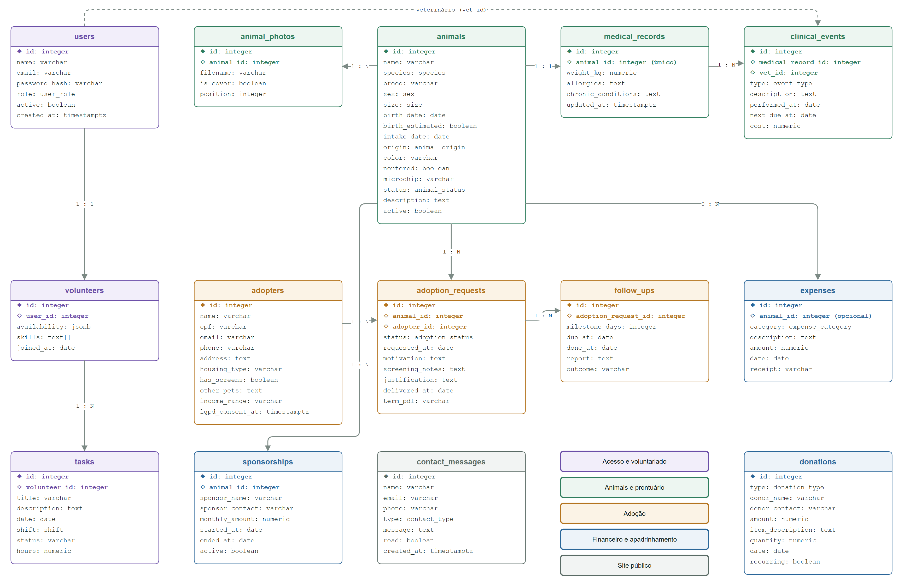
A tabela animals é a entidade central do sistema. Os campos enumerados (espécie, sexo, porte e status) são protegidos por restrições CHECK criadas pela migration, de modo que nem mesmo um comando SQL manual consegue gravar um valor inválido.
| Coluna | Tipo | Restrição | Descrição |
|---|---|---|---|
id | serial | PK | Identificador do animal |
name | varchar(100) | NOT NULL | Nome dado pela ONG |
species | text | CHECK | cachorro, gato ou outro |
sex | text | CHECK | macho ou femea |
size | text | CHECK | pequeno, medio ou grande |
age_months | integer | nullable | Idade aproximada em meses |
description | text | NOT NULL | História e temperamento, exibidos no site |
health_notes | text | NOT NULL | Observações de saúde |
neutered, vaccinated | boolean | NOT NULL | Castrado e vacinado |
status | text | CHECK, índice | disponivel, em_processo, adotado, em_tratamento |
rescued_at | date | nullable | Data do resgate |
created_at, updated_at | timestamptz | NOT NULL | Datas de criação e alteração |
A tabela adoption_requests registra cada candidatura. A chave estrangeira para o animal usa ON DELETE SET NULL: se um animal for excluído, o histórico da candidatura é preservado — comportamento verificado nos testes (Seção 11).
| Coluna | Tipo | Restrição | Descrição |
|---|---|---|---|
id | serial | PK | Identificador da candidatura |
animal_id | integer | FK → animals, SET NULL | Animal pretendido |
name, email, phone, city | varchar | NOT NULL | Dados do candidato |
message | text | NOT NULL | Relato sobre a casa e a família |
status | text | CHECK, índice | pendente, aprovado ou recusado |
created_at, updated_at | timestamptz | NOT NULL | Datas de criação e alteração |
| Tabela | Colunas principais | Observação |
|---|---|---|
users | id, name, email (único), password_hash | Senha armazenada como hash bcrypt com custo 12; administrador inicial criado a partir de variáveis de ambiente |
animal_photos | id, animal_id, filename, position | FK com ON DELETE CASCADE; o arquivo físico é removido junto com o registro |
contact_messages | id, name, email, phone, type, message, read | type restrito a contato, voluntário, doação ou denúncia |
O ciclo de vida do animal e o processo de adoção foram modelados como máquinas de estados. As setas tracejadas representam retornos excepcionais — desistência e devolução —, que exigem justificativa.
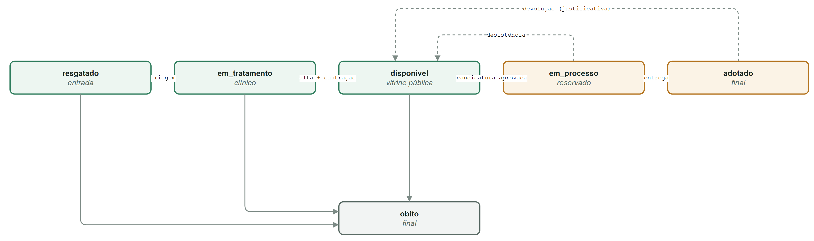
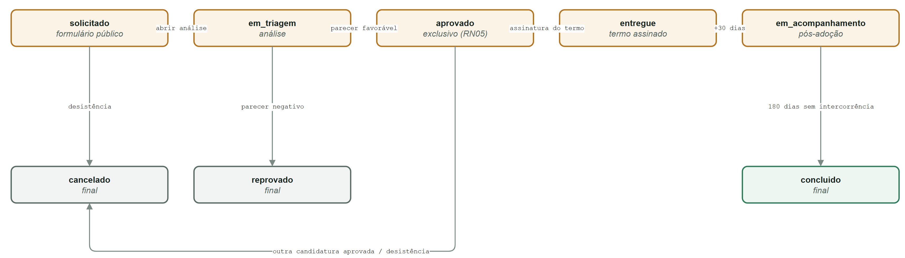
Nesta entrega, o animal já transita entre disponivel, em_processo, adotado e em_tratamento, e a candidatura entre pendente, aprovado e recusado. A migração para o grafo completo, com validação das transições na camada de serviço, está prevista para a sprint de adoção.
O Resgate Animal adota uma arquitetura em camadas, com duas aplicações JavaScript separadas: uma SPA React, servida como arquivos estáticos pelo Nginx, e uma API REST em Express, que concentra regras de negócio, autenticação e acesso ao banco. O PostgreSQL só é acessível pela API.
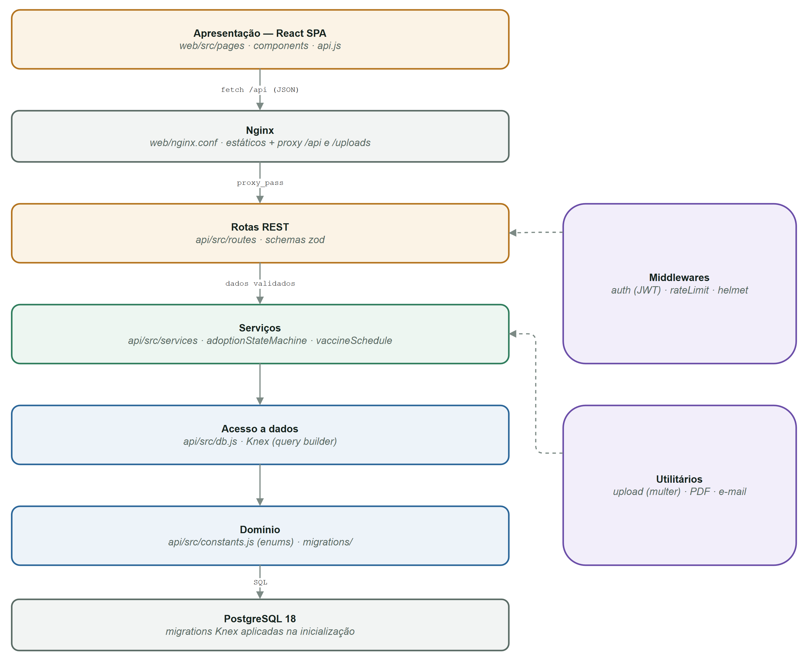
A apresentação (React) nunca acessa o banco: toda comunicação ocorre por requisições HTTP com JSON. As rotas REST validam cada entrada com um esquema zod antes de qualquer operação, de forma que dados malformados são rejeitados com erro 400 e nunca chegam ao banco. Os middlewares transversais — autenticação JWT, limite de requisições e cabeçalhos de segurança (helmet) — são aplicados por rota. O acesso a dados usa o Knex, com consultas parametrizadas. O domínio concentra os valores enumerados em um único arquivo (constants.js), usado tanto pelas migrations quanto pela validação, para que banco e API nunca divirjam.
A API segue os princípios REST: cada entidade é um recurso identificado por uma URI, manipulado pelos métodos HTTP padronizados, com respostas em JSON e códigos de status significativos (201 para criação, 204 para alteração sem conteúdo, 400 para dados inválidos, 401 para falta de autenticação, 404 para recurso inexistente). Os 16 endpoints implementados estão na Tabela 11.
| Método | Rota | Acesso | Descrição |
|---|---|---|---|
| GET | /api/health | Público | Saúde da API e conexão com o banco |
| POST | /api/auth/login | Público | Autentica e devolve o token JWT |
| GET | /api/auth/me | Admin | Dados do usuário autenticado |
| GET | /api/animals | Público | Lista com filtros por espécie, sexo, porte e status, com foto de capa |
| GET | /api/animals/{id} | Público | Detalhe do animal com todas as fotos |
| POST | /api/animals | Admin | Cadastra um animal |
| PUT | /api/animals/{id} | Admin | Atualiza um animal |
| DELETE | /api/animals/{id} | Admin | Exclui o animal e os arquivos de foto |
| POST | /api/animals/{id}/photos | Admin | Envia até 10 fotos (JPG, PNG, WEBP, até 5 MB) |
| DELETE | /api/animals/{id}/photos/{photoId} | Admin | Remove uma foto |
| POST | /api/adoptions | Público | Registra candidatura de adoção |
| GET | /api/adoptions | Admin | Fila de candidaturas, com filtro por status |
| PATCH | /api/adoptions/{id} | Admin | Aprova, recusa ou volta para pendente |
| POST | /api/contacts | Público | Envia mensagem de contato |
| GET | /api/contacts | Admin | Caixa de mensagens |
| PATCH | /api/contacts/{id} | Admin | Marca a mensagem como lida ou não lida |
A infraestrutura foi projetada para um servidor Proxmox VE, plataforma comum em ONGs e pequenas empresas por não ter custo de licença. Toda a aplicação roda em um único container LXC, dentro do qual o Docker Compose executa três serviços. A Figura 8 apresenta a topologia.
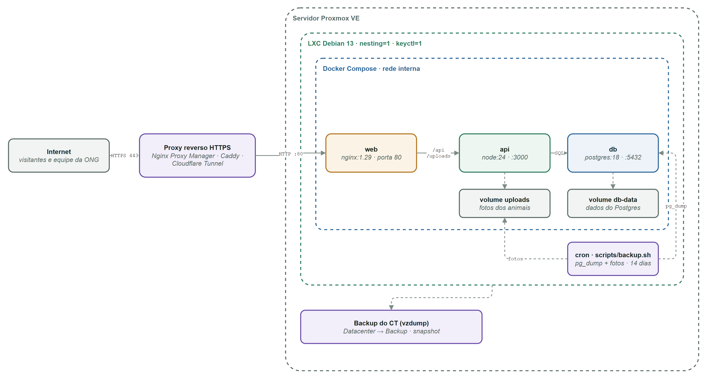
O container é criado a partir do template Debian 13, sem privilégios, com 2 vCPUs, 2 GB de memória e 20 GB de disco — suficiente para o porte de uma ONG como a do estudo de caso. As opções nesting=1 e keyctl=1 permitem que o Docker funcione dentro do LXC. Após instalar o Docker, a implantação se resume a clonar o repositório, preencher o arquivo .env e executar docker compose up -d --build.
| Serviço | Imagem | Porta | Função |
|---|---|---|---|
web | nginx:1.29-alpine (multi-stage, build com node:24) | 80 (única exposta) | Serve o React compilado e encaminha /api e /uploads para a API |
api | node:24-alpine | 3000 (interna) | API REST; aplica migrations e cria o administrador na inicialização; executa como usuário sem privilégios |
db | postgres:18-alpine | 5432 (interna) | Banco de dados; a API só inicia após o healthcheck do banco |
Os dados persistentes ficam em dois volumes nomeados: db-data (banco) e uploads (fotos). Assim, reconstruir ou atualizar os containers nunca apaga informações. Uma nova versão é publicada com git pull seguido de docker compose up -d --build; as migrations pendentes são aplicadas automaticamente.
O container serve HTTP na porta 80. Para publicação na internet, um proxy reverso com certificado Let's Encrypt — Nginx Proxy Manager ou Caddy em outro LXC, ou um Cloudflare Tunnel, que dispensa abrir portas no roteador — faz a terminação TLS e encaminha o tráfego ao container.
A proteção dos dados é feita em duas camadas: o script scripts/backup.sh, agendado no cron do LXC, gera diariamente um dump do banco (pg_dump em formato custom) e um arquivo compactado das fotos, mantendo os 14 últimos; e o backup do container inteiro pelo próprio Proxmox (vzdump em modo snapshot), que permite restaurar o servidor completo em minutos.
Esta seção apresenta as telas do sistema em execução, preenchido com os dados fictícios da Associação Focinho Amigo: nove animais, cinco candidaturas e quatro mensagens. A identidade visual usa tons quentes e cartões arredondados, para transmitir acolhimento, e todas as telas se adaptam a celulares.
A página inicial apresenta a missão da ONG, dois botões de ação ("Quero adotar" e "Quero ajudar"), os seis animais disponíveis mais recentes e os três pilares do trabalho: resgate, cuidado e adoção responsável.
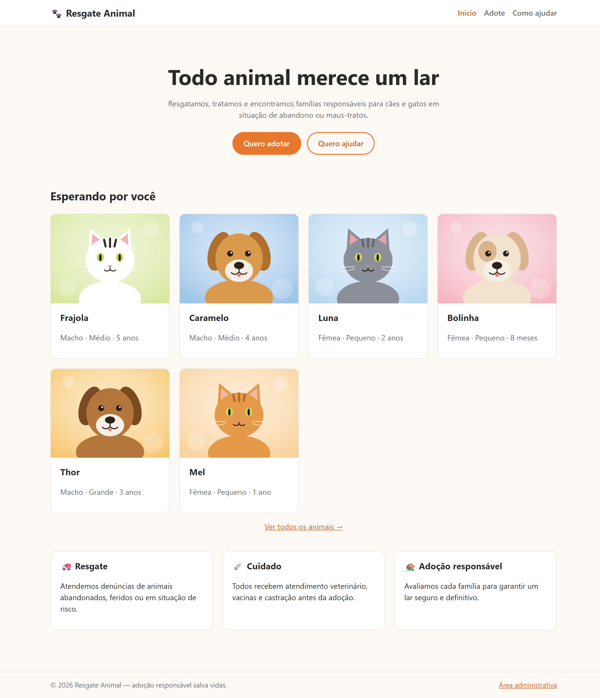
A vitrine lista apenas os animais com status disponivel. Os filtros por espécie, sexo e porte ficam registrados na URL (por exemplo, /adote?species=gato), o que permite à ONG divulgar links prontos nas redes sociais, como "conheça nossos gatos".
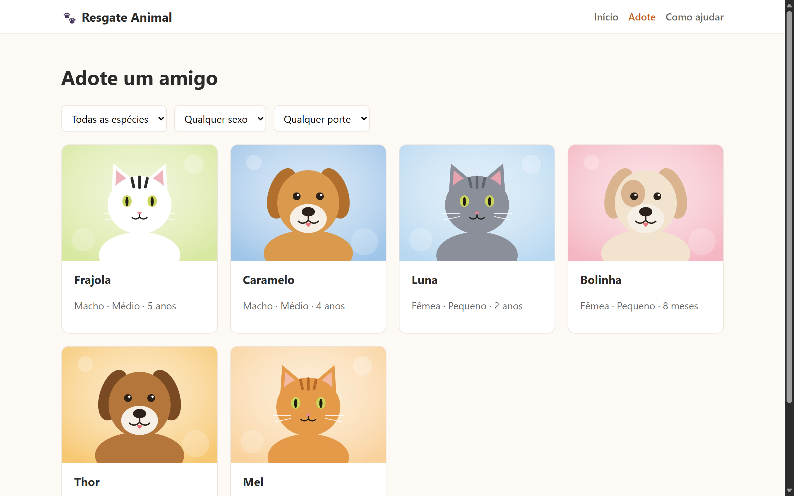
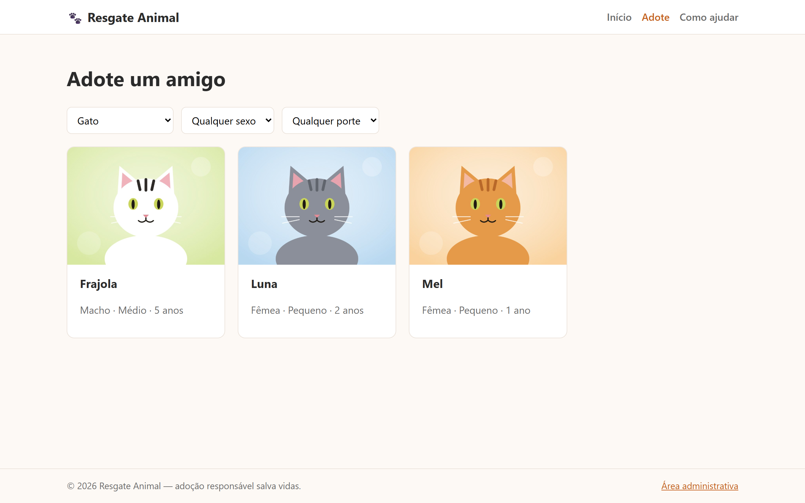
Cada animal tem uma página própria com galeria de fotos, ficha (espécie, sexo, porte, idade, castração e vacinação), sua história e as observações de saúde. Abaixo, o formulário "Quero adotar" coleta nome, e-mail, telefone, cidade e um relato sobre a casa. O envio cai diretamente na fila do painel administrativo, encerrando a dispersão entre canais descrita no estudo de caso.
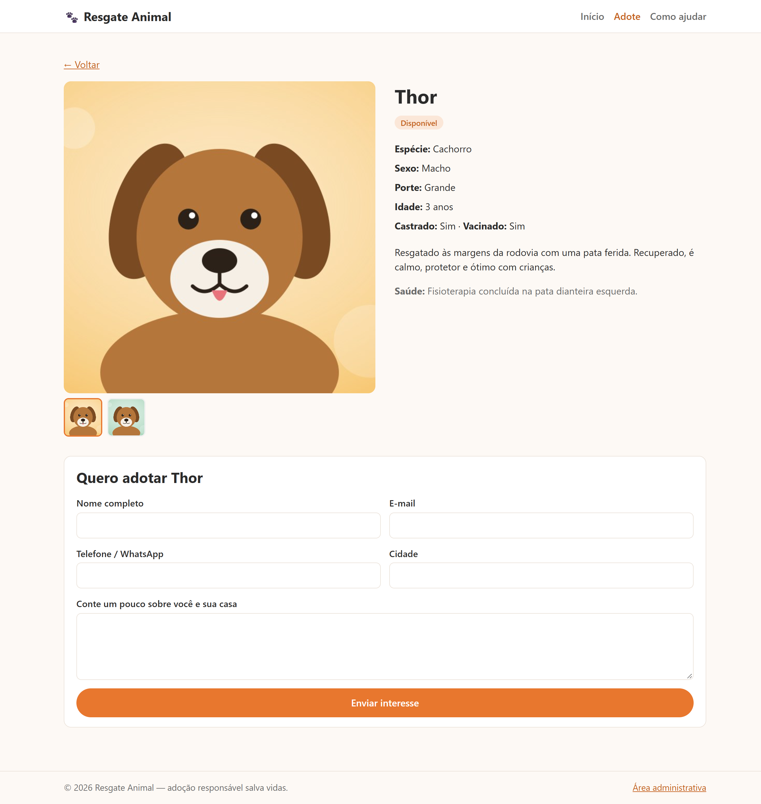
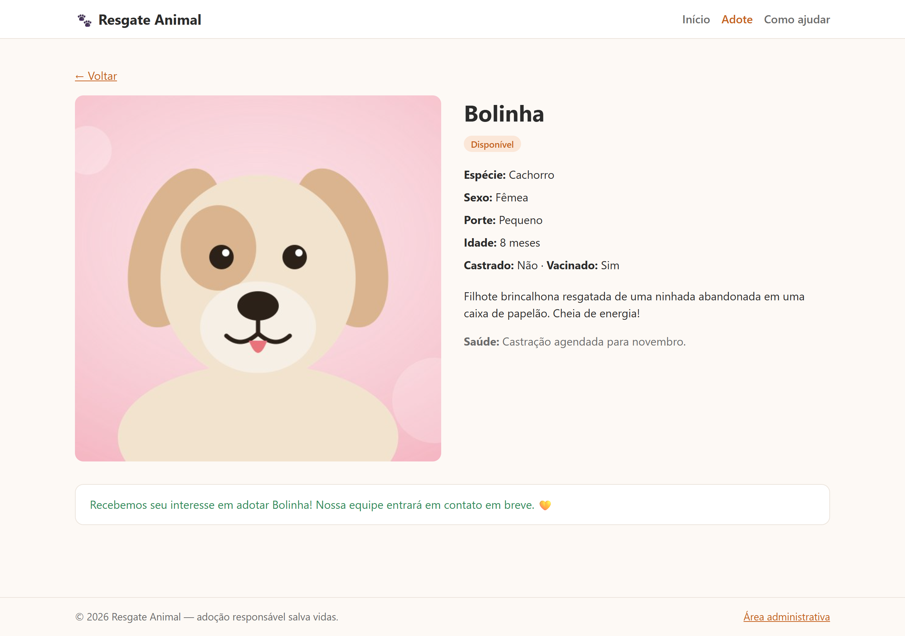
A página "Como ajudar" reúne as três formas de apoio — doação por PIX, voluntariado e denúncia — e um formulário de contato com campo de assunto. As mensagens chegam classificadas na caixa de mensagens do painel, o que permite, por exemplo, identificar uma denúncia de imediato, sem que ela se perca entre pedidos de informação.
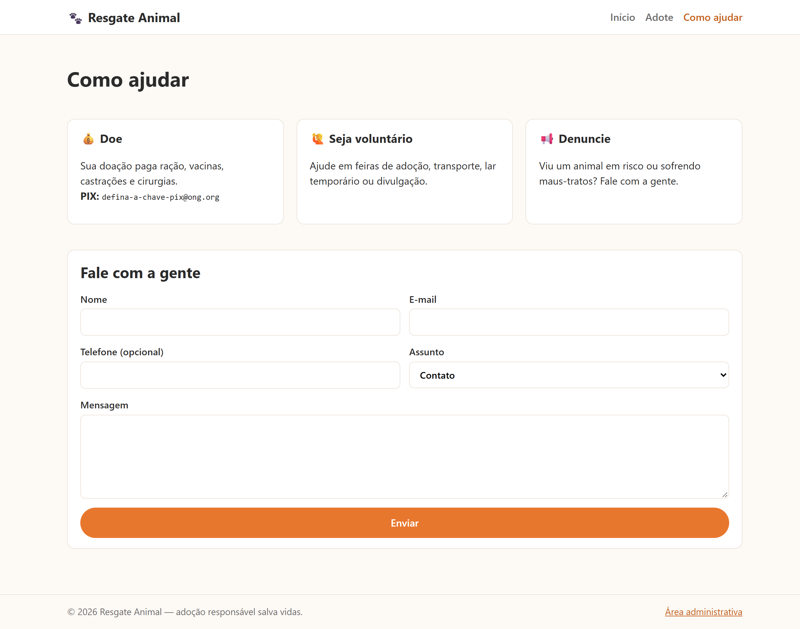
Como a maior parte do público chega pelo Instagram, a interface foi construída para funcionar em telas pequenas: a grade de cartões passa a uma coluna, os formulários se reorganizam e o menu permanece acessível.
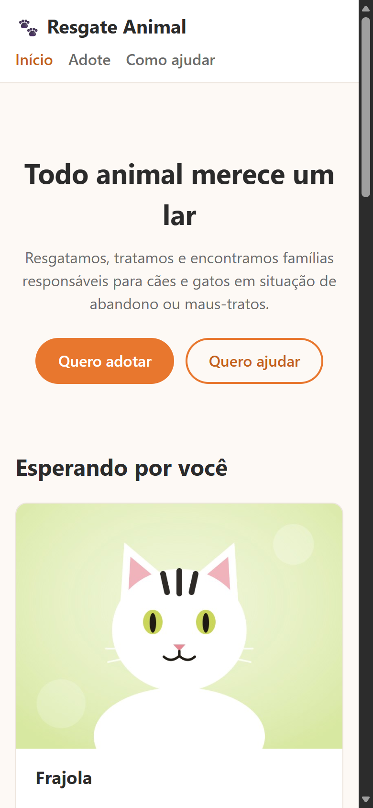
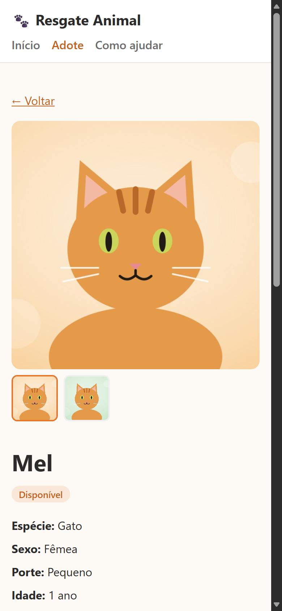
A área administrativa (/admin) exige login. Ao tentar acessá-la sem sessão, o usuário é levado à tela de login e, após autenticar, retorna à página que havia pedido. Quando o token expira, a aplicação descarta a sessão e volta para o login automaticamente.
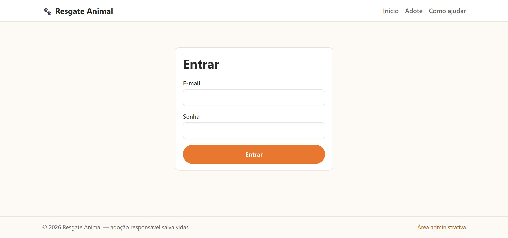
A lista mostra todos os animais, de qualquer status, com acesso à edição e à exclusão. O editor reúne todos os campos da ficha e a gestão de fotos: envio de várias imagens de uma vez e remoção individual. A primeira foto é usada como capa na vitrine.
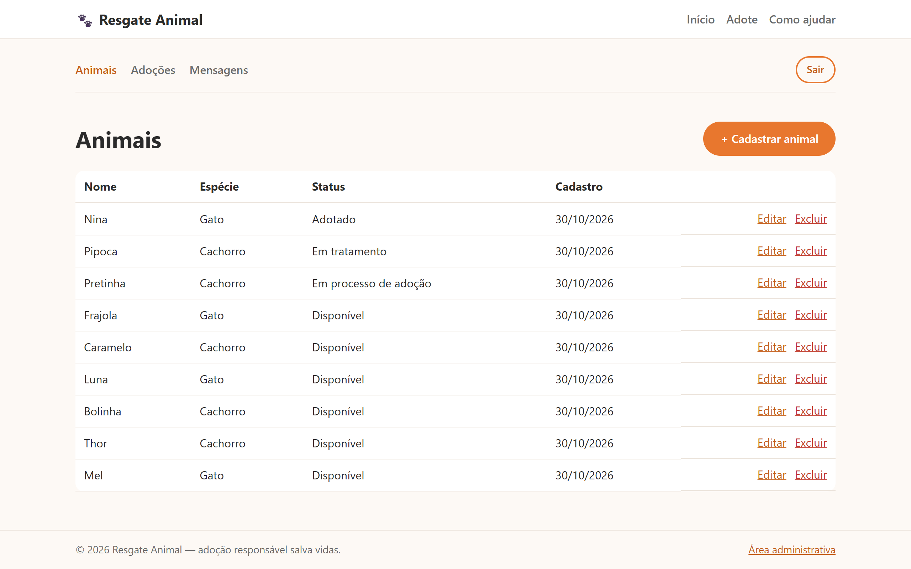
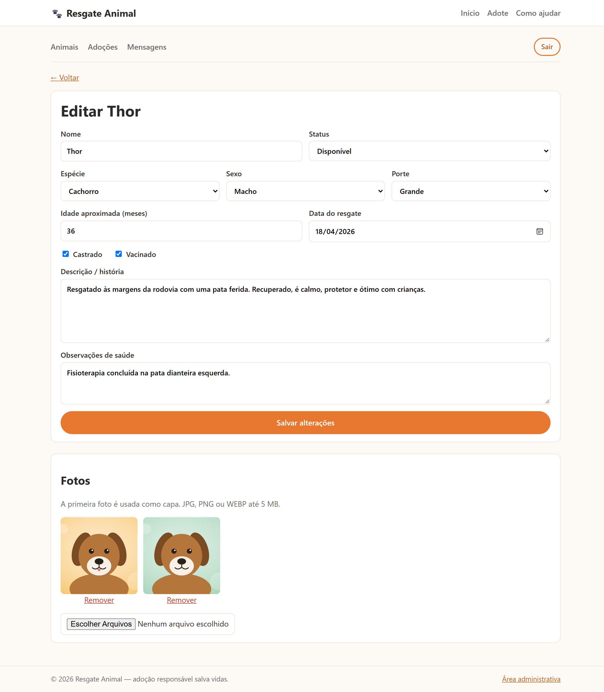
A fila de candidaturas mostra, para cada pedido, o candidato, o animal (com link para a ficha), os contatos, a cidade, o relato e o status. A coordenação aprova ou recusa com um clique, e pode filtrar por status. Na Figura 19, a candidatura da família Lima pela Pretinha aparece aprovada, e a de Paulo Henrique pelo Caramelo, recusada.
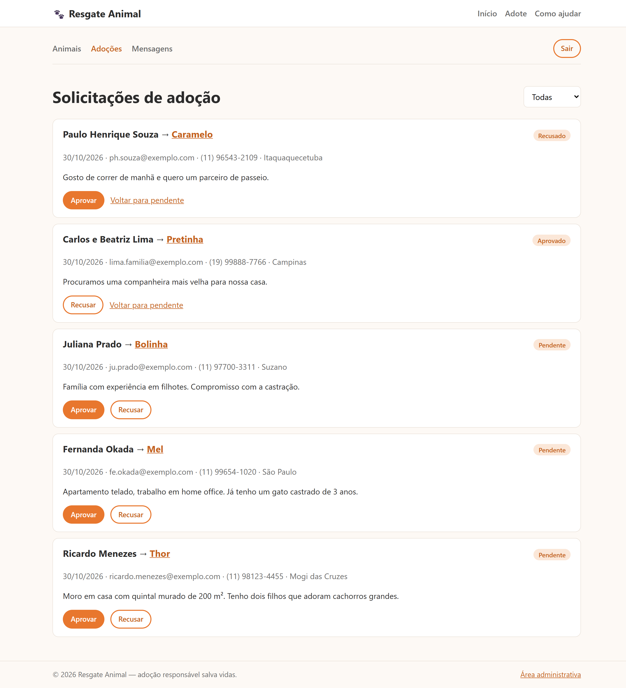
As mensagens recebidas pelo formulário de contato aparecem com o tipo em destaque — contato, voluntariado, doação ou denúncia. Mensagens já tratadas podem ser marcadas como lidas e ficam esmaecidas, de modo que a equipe identifica rapidamente o que ainda precisa de resposta.
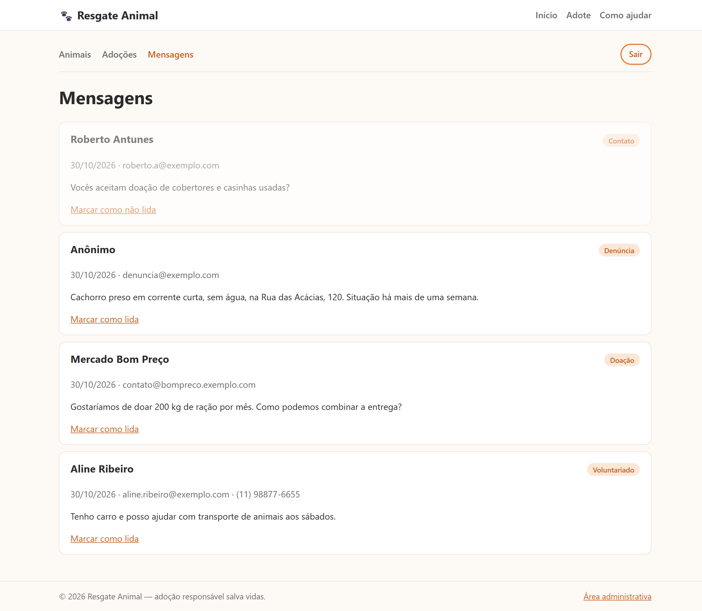
| # | Ator | Ação | Endpoint | Status |
|---|---|---|---|---|
| 1 | Admin | Cadastra o animal e envia as fotos | POST /api/animalsPOST /api/animals/{id}/photos | disponivel |
| 2 | Visitante | Encontra o animal na vitrine e envia a candidatura | POST /api/adoptions | pendente |
| 3 | Admin | Analisa a fila, entra em contato e aprova | PATCH /api/adoptions/{id} | aprovado |
| 4 | Admin | Marca o animal como em processo de adoção | PUT /api/animals/{id} | em_processo |
| 5 | Admin | Após a entrega, marca o animal como adotado; ele sai da vitrine | PUT /api/animals/{id} | adotado |
Por lidar com dados pessoais de adotantes, voluntários e denunciantes, a segurança foi tratada em várias camadas, da rede ao armazenamento.
X-Forwarded-For e a API confia em exatamente um proxy, para que o limite de requisições funcione por visitante.node, não como root..env, ignorado pelo Git.O sistema foi validado em ambiente local, com um PostgreSQL temporário e isolado, por um roteiro de 31 casos de teste automatizados de ponta a ponta, executados diretamente contra a API em funcionamento. Todos os 31 casos foram aprovados. Em seguida, os fluxos principais foram verificados manualmente no navegador: vitrine, filtros, envio de candidatura, redirecionamento para o login, painel de adoções e editor de animais.
| Grupo | Casos verificados | Casos | Resultado |
|---|---|---|---|
| Saúde e autenticação | Health check; login com senha errada (401); login válido com e-mail em maiúsculas; consulta do usuário autenticado | 4 | Aprovado |
| Proteção e validação | Cadastro sem token (401); espécie inválida (400); JSON malformado (400); rota inexistente (404) | 4 | Aprovado |
| Animais | Cadastro; segundo cadastro; listagem pública; filtro por espécie; detalhe; animal inexistente (404); edição; exclusão | 8 | Aprovado |
| Fotos | Envio de duas fotos; rejeição de arquivo que não é imagem (400); foto servida com tipo correto; remoção do registro e do arquivo; remoção das fotos ao excluir o animal | 6 | Aprovado |
| Adoção | Candidatura válida; candidatura para animal já adotado (400); listagem sem token (401); listagem com nome do animal; aprovação; histórico mantido após exclusão do animal | 6 | Aprovado |
| Contato | Envio de mensagem; listagem; marcação como lida | 3 | Aprovado |
| Total | 31 | 31/31 |
Os testes revelaram um defeito, corrigido antes desta entrega: o driver do PostgreSQL convertia colunas do tipo date em objetos de data com fuso horário, o que poderia exibir a data do resgate com um dia de diferença dependendo do fuso do servidor. A correção faz o driver devolver a data como texto (AAAA-MM-DD), exatamente como foi gravada.
| Objetivo | Situação | Evidência |
|---|---|---|
| Site público com vitrine, filtros e candidatura | Atingido ✔ | Figuras 9 a 15 |
| Canal único de contato, voluntariado, doação e denúncia | Atingido ✔ | Figuras 14 e 20 |
| API REST com validação, JWT e bcrypt | Atingido ✔ | 16 endpoints, Tabela 11 |
| Banco PostgreSQL versionado por migrations | Atingido ✔ | 5 tabelas, Tabelas 8 a 10 |
| Empacotamento Docker e roteiro para Proxmox | Atingido ✔ | Figura 8, Tabela 12 |
| Especificação completa e diagramas | Atingido ✔ | 39 RF, 13 RNF, 10 RN, 5 diagramas |
| Sistema validado por testes | Atingido ✔ | 31/31 casos aprovados, Tabela 14 |
| Publicação em produção no servidor Proxmox | Próxima etapa | Infraestrutura pronta; implantação pendente |
Em números, a entrega soma cerca de 480 linhas de código na API (14 arquivos), 1.440 linhas na interface (18 arquivos) e 130 linhas de infraestrutura (Dockerfiles, Compose, Nginx e backup), além da especificação e dos diagramas.
nesting e keyctl e um container sem privilégios bem configurado; o roteiro foi documentado passo a passo no README.O desenvolvimento do Resgate Animal mostrou que é possível construir, apenas com ferramentas de código aberto e em uma única linguagem — JavaScript —, uma solução profissional para um problema real do terceiro setor. A aplicação entregue cobre a parte da operação de uma ONG que mais impacta o resultado final, as adoções: o site público, a vitrine, a candidatura on-line e a centralização dos contatos em um painel único.
O estudo de caso da Associação Focinho Amigo, embora fictício, cumpriu um papel central: cada requisito pode ser rastreado até uma dor concreta. O episódio do Thor, prometido a duas famílias, originou a fila única de candidaturas e a regra de exclusividade; as denúncias perdidas no Instagram originaram a caixa de mensagens classificada; o surto de cinomose e a dificuldade de prestar contas orientaram os módulos de prontuário e financeiro, já especificados e modelados.
Do ponto de vista técnico, a combinação de validação por esquemas, restrições no próprio banco, migrations automáticas e containers Docker resultou em um sistema simples de operar e difícil de corromper — características importantes quando a manutenção pode ficar a cargo de voluntários. A infraestrutura sobre Proxmox e LXC mantém o custo de hospedagem baixo e permite backups completos do servidor em poucos minutos. Os 31 casos de teste aprovados, e o defeito de fuso horário encontrado e corrigido por eles, reforçam a importância de testar contra o sistema real, e não apenas contra simulações.
A próxima etapa natural é a publicação no servidor Proxmox, seguida da implementação dos módulos de prontuário e de adoção completa. Com a especificação, o modelo de dados e a arquitetura já definidos, essas evoluções podem ser feitas de forma incremental, sem retrabalho na base construída.
Conclui-se que os objetivos propostos para esta etapa foram atingidos e que o projeto proporcionou experiência prática em desenvolvimento full stack, modelagem de dados, segurança de aplicações web, containers e virtualização — um conjunto de competências diretamente aplicável ao mercado de tecnologia e, neste caso, a uma causa que merece boas ferramentas.
DOCKER INC. Docker Documentation. Disponível em: https://docs.docker.com. Acesso em: out. 2026.
FIELDING, R. T. Architectural Styles and the Design of Network-based Software Architectures. Tese (Doutorado) – University of California, Irvine, 2000.
JONES, M.; BRADLEY, J.; SAKIMURA, N. RFC 7519: JSON Web Token (JWT). IETF, 2015. Disponível em: https://www.rfc-editor.org/rfc/rfc7519. Acesso em: out. 2026.
KNEX.JS. Knex.js: SQL query builder. Disponível em: https://knexjs.org. Acesso em: out. 2026.
META PLATFORMS. React Documentation. Disponível em: https://react.dev. Acesso em: out. 2026.
OPENJS FOUNDATION. Express Documentation. Disponível em: https://expressjs.com. Acesso em: out. 2026.
OPENJS FOUNDATION. Node.js Documentation. Disponível em: https://nodejs.org/docs. Acesso em: out. 2026.
OWASP – OPEN WEB APPLICATION SECURITY PROJECT. Password Storage Cheat Sheet. Disponível em: https://cheatsheetseries.owasp.org/cheatsheets/Password_Storage_Cheat_Sheet.html. Acesso em: out. 2026.
POSTGRESQL GLOBAL DEVELOPMENT GROUP. PostgreSQL Documentation. Disponível em: https://www.postgresql.org/docs. Acesso em: out. 2026.
PROXMOX SERVER SOLUTIONS. Proxmox VE Administration Guide. Disponível em: https://pve.proxmox.com/pve-docs. Acesso em: out. 2026.
VITE. Vite Documentation. Disponível em: https://vite.dev. Acesso em: out. 2026.
ZOD. Zod Documentation. Disponível em: https://zod.dev. Acesso em: out. 2026.